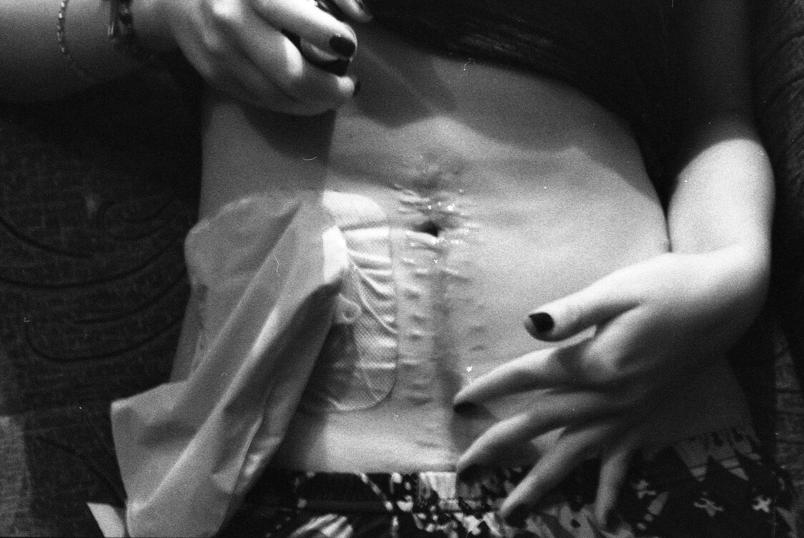
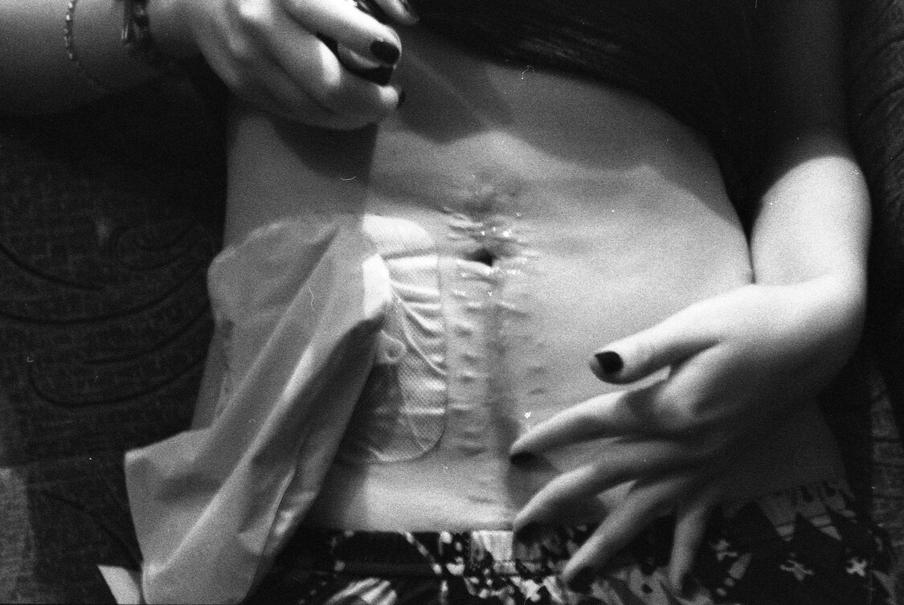

Anja
This body of work is inspired by the harrowing journey of a young woman whose life was forever
altered
by a
devastating
experience with food poisoning. What began as a physical ailment spiraled into a prolonged struggle,
marked by
the
consequences of medical ignorance. Misdiagnosed and subjected to unnecessary surgery, she faced two
years of
hardship
and adaptation as she learned to navigate life with a stoma.
Through this project, I aim to illuminate the profound impact of her suffering and resilience. Her
story
highlights the
often-overlooked realities of medical missteps—how they can disrupt not just physical health, but
also
emotional
well-being and identity. The emotional weight of her experience serves as a poignant reminder of the
critical
importance
of compassion and diligence in healthcare.
Using black and white analog photography, I seek to convey the complexities of her life during this
challenging
time.
Each piece reflects the tension between hope and despair, capturing the daily battles she faced and
the
strength
it took
to reclaim her life.
This work is not only a tribute to her resilience but also a call to recognize the human stories
behind
medical
conditions. It invites viewers to reflect on the themes of suffering, adaptability, and the power of
personal
narrative.
By sharing her experience, I hope to foster empathy and understanding for those who endure similar
battles,
emphasizing
the importance of listening and advocating for one another in times of vulnerability.


 
